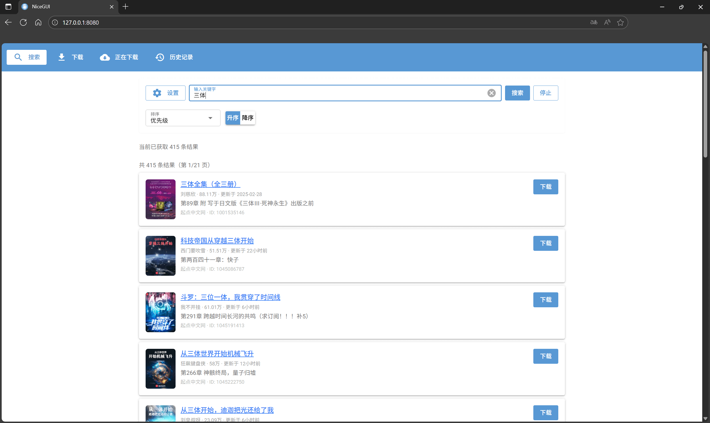

Web Usage
WEB 使用示例¶
支持的站点列表详见: 站点支持文档
快速开始¶
# 启动 Web 界面 (基于当前 settings.toml)
novel-web
# 如需提供局域网/外网访问 (请自行留意安全与网络环境)
# novel-web --listen public
任务执行规则¶
- 不同站点的任务: 会并行下载，互不阻塞。
- 相同站点的任务: 会顺序排队执行，避免与站点接口冲突。
- 全局没有并发限制: 一次性添加太多任务可能导致 带宽/CPU/内存 被耗尽，或触发站点的反爬机制。建议合理分批添加任务，避免资源耗尽。
页面路由一览¶
| 页面 | 路由 | 作用 |
|---|---|---|
| 搜索 (search) | / |
搜索小说并一键加入下载队列 |
| 下载 (download) | /download |
通过“URL”或“站点+ID”添加下载任务 |
| 进度 (progress) | /progress |
查看运行中/排队中的任务与实时进度，支持取消 |
| 历史 (history) | /history |
浏览并下载历史导出的文件 (txt/epub) |
search 搜索页面¶

用途: 在多个站点中搜索小说，支持结果流式刷新、排序、分页，并可直接把条目加入下载队列。
使用说明
- 在顶部输入框中键入关键词，点击「搜索」或按下
Enter开始搜索。 - 结果会逐步出现，无需等待全部结束即可浏览与操作。
- 每条结果展示: 封面 (若无则占位)、标题 (可新标签打开原站详情)、等书籍信息。
- 点击条目右侧的「下载」即可将该书加入下载队列。
- 点击「Stop」可中断当前搜索。
筛选与高级设置 (Settings)
- 站点选择: 支持「全选 / 清空」以及按站点勾选检索范围。
- Per-site Limit (默认
30): 限制每个站点最多返回的结果数。 - Timeout (seconds) (默认
10.0): 单站点检索超时时间。
排序与分页
- 排序字段:
Priority(默认)、Site、Title、Author；顺序支持Ascending / Descending。 - 分页: 每页
20条。 - 快捷键:
←/→切换上一页 / 下一页 (在列表区域时)。
状态提示
- 顶部状态条会显示「Searching...」与「当前已获取 N 条结果」等信息。
download 下载页面¶
可在两种模式间切换: Via URL 与 Site + ID。
模式一: Via URL¶

使用说明
- 将小说详情页链接粘贴到「Novel URL」。
- 失焦 (或稍等) 后将自动解析站点与书籍 ID，并在「解析结果」中展示。
- 点击「添加到下载列表」即可添加任务。
- 解析失败会给出提示 (可能是链接不受支持或无效)。
提示: 在任意输入框按
Enter也会提交; 「Clear」可快速清空重填。
模式二: Site + ID¶

使用说明
- 在「站点」下拉中选择站点 (默认
qidian)。 - 在「Book ID」中输入对应站点的书籍 ID。
- 点击「添加到下载列表」即可添加任务。
progress 当前下载进度¶

用途: 一处查看所有任务的生命周期与实时进度，必要时可取消任务或在完成后直接下载导出文件。
页面结构
- Running / Queued: 正在下载或排队中的任务
- 显示站点、书籍 ID、进度条与已完成章节数。
- 支持「Cancel」取消运行中/排队中的任务。
- Completed / Cancelled / Failed: 历史结束任务
- 对已完成任务，若生成
txt/epub等文件，会直接显示下载按钮 (点击即可下载该次导出的文件)。
- 对已完成任务，若生成
刷新频率: 页面会每 0.5 秒自动刷新一次状态。
history 历史记录¶

用途: 浏览与下载本地历史导出文件，目前支持 txt 与 epub。
数据来源
- 文件来自配置项
general.output_dir(默认./downloads)。
功能点
- 类型过滤:
All / txt / epub。 - 排序: 按文件名 (Filename) 或修改时间 (Modified Time); 支持升序/降序。
- 分页: 每页
20个文件，底部提供分页器。 - 手动刷新: 点击「Refresh」重新扫描目录。
- 下载: 每个文件卡片上提供「下载」按钮，点击即下发文件。
快捷键
- 在列表区域使用
←/→切换上一页 / 下一页。